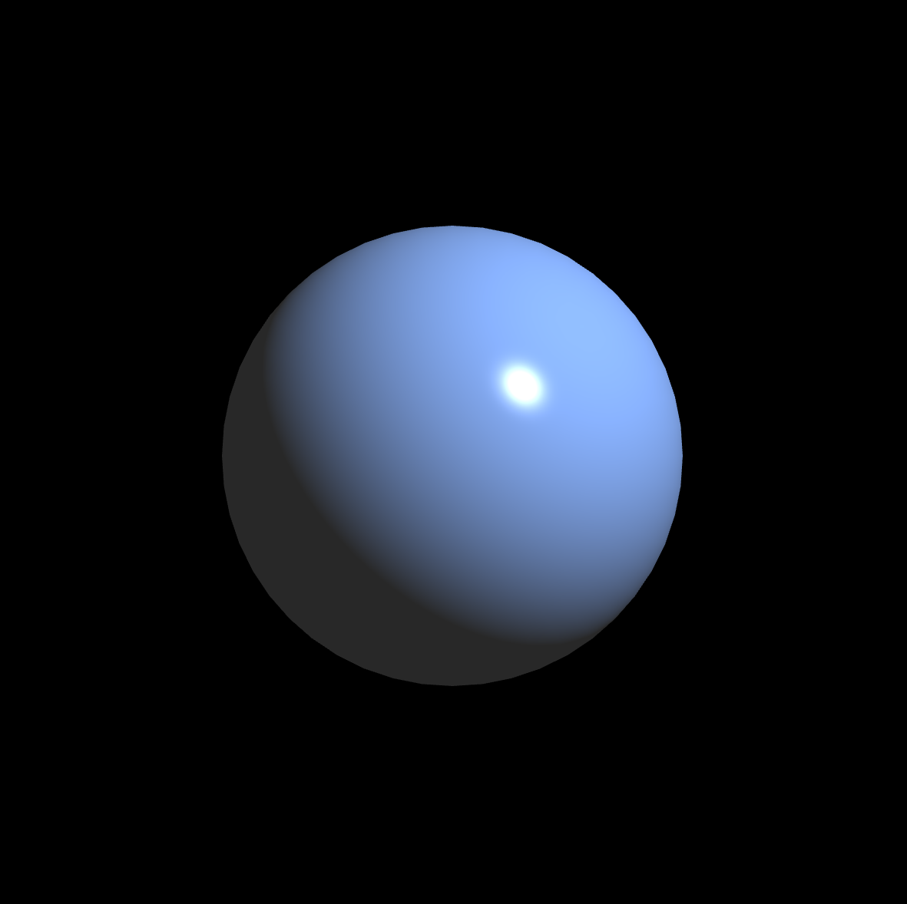

Small, easy to use C++ library for 3D drawing, based on openGL.
About
The goal of this project is to create an api that makes it easy to write 3D graphics demos in C++. This library supports my teaching and research (and so the api still changes frequently!). The design goals of this project are:
- To make common tasks easy, e.g. drawing primitives, loading textures, defining shaders
- To make less common tasks possible
- To support fast prototyping and experimentation
For example, the following program draws a sphere with phong shading

How to build
Tools and dependencies
To get started, you will need a C++ development environment, git, cmake. To build, you will also need to several dependencies.
- GLEW: Needed for accessing openGL 4.0 features
- GLFW: Implements our window and user interaction events, such as mouse and keyboard
- GLM: Implements useful vector and matrix functionality for graphics
- STB: Needed for loading images
- GLTF: Needed for loading models
Windows
On windows, you will need to have a C++ build environment, git and cmake installed. If you do not have a C++ compiler on windows, you can use the community version of visual studio.
- Download and install Visual Studio Community 2019.
Important!! During installation, select: Desktop development with C++

The dependencies, such as GLEW, GLFW, and GLM, are included in this repository under /external.
macOS
On macOS, you should have git and a C++ compiler from running command xcode-select --install. To install cmake, glew, and glfw, you can use brew.
brew install cmakebrew install glewbrew install glfw3
GLM is included with this repository but you can also install it using the instructions here. Other dependencies are included in /external.
Ubuntu
On linux, you can install many of the necessary tools and dependencies using apt-get.
sudo apt-get install cmakesudo apt-get install gitbrew install glfw3
todo
Compiling and running
Windows
On windows, use cmake to build either makefiles or a visual studio project. And then build from there.
From terminal (either git bash or powershell):
After building all source, you can run either from visual studio or the command line:
macOS/Ubuntu
Open terminal to the directory containing this repository.
Docs
Read the docs here.